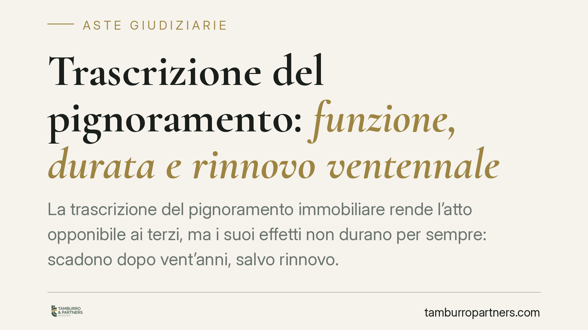

Trascrizione del pignoramento: funzione, durata e rinnovo ventennale
La trascrizione del pignoramento immobiliare rende l'atto opponibile ai terzi, ma i suoi effetti non durano per sempre: scadono dopo vent'anni, salvo rinnovo. Comprendere il meccanismo del rinnovo, e cosa accade quando è parziale o manca, è decisivo per creditori, debitori e per chi guarda a un immobile in asta.

La funzione della trascrizione: opponibilità ai terzi
Il pignoramento immobiliare si perfeziona con la notifica al debitore e, soprattutto, con la sua trascrizione nei registri immobiliari, come previsto dall'art. 555 del codice di procedura civile.
La trascrizione non è un mero adempimento formale. Serve a rendere il vincolo opponibile ai terzi: una volta trascritto il pignoramento, chi acquista il bene dal debitore, o vi iscrive successivamente un'ipoteca, subisce gli effetti della procedura esecutiva. In altre parole, la trascrizione fissa un ordine di priorità e protegge il creditore procedente da atti di disposizione compiuti dopo quella data.
Inquadramento normativo: la durata ventennale
Gli effetti della trascrizione del pignoramento non sono perpetui. L'art. 2668-bis del codice civile stabilisce che la trascrizione conserva il suo effetto per vent'anni dalla data in cui è stata eseguita.
Lo stesso articolo prevede che l'effetto possa essere conservato oltre tale termine attraverso la rinnovazione, da eseguire prima della scadenza del ventennio. La disciplina del rinnovo, dunque, è contenuta nella medesima norma che fissa la durata: non esistono articoli ulteriori che regolino in via autonoma il meccanismo. Al rinnovo si applicano, per quanto compatibili, le regole generali sulla rinnovazione delle trascrizioni.
La conseguenza è netta: se il termine ventennale decorre senza che il rinnovo sia eseguito, la trascrizione perde efficacia. Il pignoramento, pur formalmente compiuto, non è più opponibile ai terzi.
Perdita di efficacia del pignoramento o estinzione del processo?
Qui occorre una distinzione che spesso viene confusa. La perdita di efficacia della trascrizione per mancato rinnovo è un fenomeno di diritto sostanziale: il vincolo cessa di produrre effetti verso i terzi.
Altra cosa è l'estinzione del processo esecutivo, che risponde a cause proprie disciplinate dal codice di rito (ad esempio la rinuncia o l'inattività delle parti, ai sensi dell'art. 630 c.p.c.). I due istituti non coincidono e non vanno sovrapposti. Il venir meno dell'efficacia della trascrizione incide sulla tenuta della procedura perché priva il pignoramento del suo presupposto di opponibilità, ma la qualificazione degli effetti processuali resta un piano distinto, da valutare caso per caso.
Sulla portata del mancato rinnovo si registrano interventi della recente giurisprudenza di legittimità, che hanno ribadito la centralità del rinnovo tempestivo per la conservazione degli effetti del pignoramento. Il principio di fondo è consolidato: senza rinnovo nei termini, la trascrizione decade.
Il nodo del rinnovo parziale
Un aspetto delicato riguarda il rinnovo parziale, cioè limitato solo ad alcuni dei beni originariamente colpiti dal pignoramento.
In questi casi l'effetto conservativo opera soltanto per i beni espressamente indicati nella rinnovazione. Per gli immobili non ricompresi nel rinnovo, trascorso il ventennio, la trascrizione perde efficacia come se il rinnovo non vi fosse stato.
È un punto da maneggiare con attenzione: un rinnovo incompleto, magari per errore nell'individuazione dei cespiti, lascia scoperti proprio quei beni che si intendeva continuare a vincolare. L'effetto è selettivo, non automaticamente esteso all'intero compendio pignorato.
Implicazioni pratiche
Per il creditore procedente: il controllo delle scadenze è un'attività continuativa. Un pignoramento trascritto vent'anni prima e non rinnovato equivale, sul piano dell'opponibilità, a non averlo mai trascritto rispetto ai terzi medio tempore.
Per il debitore esecutato: la verifica della regolarità e dell'attualità della trascrizione può assumere rilievo nell'ambito delle difese esperibili contro la procedura.
Per chi partecipa all'asta: l'esame della continuità delle trascrizioni e dell'eventuale rinnovo fa parte della valutazione preliminare dell'immobile. Una trascrizione scaduta o rinnovata solo in parte incide sulla situazione dei vincoli gravanti sul bene.
Cosa fare in concreto
- Verifica la data di trascrizione del pignoramento e calcola con precisione la scadenza del ventennio.
- Esegui il rinnovo prima della scadenza, non dopo: il rinnovo tardivo non recupera l'efficacia già perduta.
- Controlla che il rinnovo copra tutti i beni che si intende mantenere vincolati, evitando omissioni che lascerebbero scoperti singoli immobili.
- Richiedi una visura ipotecaria aggiornata per ricostruire la continuità delle trascrizioni e individuare eventuali decadenze.
- Prima di assumere decisioni sulla procedura, è opportuno un esame tecnico della documentazione ipocatastale da parte di un professionista.
---
Contributo informativo a cura di Tamburro & Partners Avvocati – Avv. Giuseppe Tamburro. Non costituisce parere legale.
Comprare bene all’asta si può.
Se vuoi acquistare un immobile all’asta in sicurezza o difendere un esecutato, scrivi allo studio. Ti rispondiamo entro un giorno lavorativo.